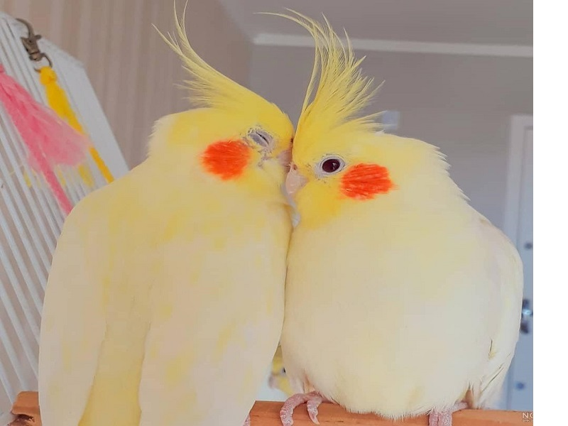

عروس هلندي و يا کاکاتيل
عروس هلندي و يا کاکاتيل يکي از بهترين طوطي هاي کوچک براي نگهداري و پرورش بوده است. نسبت به ساير خانواده طوطي ها، عروس هلندي گونه هاي رنگي محدودي دارند. اما شخصيت هاي جذاب و آوازهاي دلنشين ، آنها را به يکي از محبوب ترين پرندگان خانگي تبديل نموده است. عروس هلندي ها بسيار اجتماعي بوده و پرندگاني فعال و پر انرژي هستند. آنها بازيگوشي و صرف وقت با صاحب خود را دوست دارند. جهش هاي بي شماري رنگ کاکاتيل هاي موجود در حال حاضر تنها علاقه اين پرندگان را افزايش داده است. بسياري از پرورش دهندگان کاکاتيل سهواً در ژنتيک کاملاً آشنا هستند. عروس هلندي ها به سرعت بالغ مي شوند و ممکن است در سن 1 سالگي شروع به پرورش کنند. عروس هلندي ماده در زمان تخم گذاري معمولا چهار تخم ميگذارد. ماده ها مسئوليت جوجه کشي را برعهده ميگيرند. عروس هلندي نر نيز مي تواند به خوبي جوجه هايش را غذا دهد. نکته جالب توجه در مورد عروس هلندي ها توانايي سخنگويي انها مي باشد. اما عروس هلندي نر فقط اين استعداد را دارد. اگر چه نام اين پرنده عروس هلندي است ولي منشآ اصلي آنها جنگل هاي استراليا مي باشد.
شکل ظاهری: عروس هلندی پرنده زیبایی است و به رنگهای مختلف دیده میشود و میتواند به راحتی خواسته صاحبان خود را تأمین نماید. رنگ پرنده هیچ گونه تأثیری در سلامتی و یا رفتار پرنده ندارد. رنگهای اصلی پرنده شامل: خاکستری، سفید، کرم، زرد و قهوهای است. بر روی سر پرنده کاکلی بلند و زیبا قرار دارد و بر روی گونههای آن یک لکه سرخ رنگ دیده میشود. پرنده دم درازی دارد که در انتها نوک تیز میباشد. از لحاظ اندازه، عروس هلندی جزو طوطیهای کوچک میباشد.
از لحاظ قیمت نیز، این پرنده قیمتی مشابه و یا شاید هم گران تر از طوطی های همسان خود داشته باشد. عروس هلندی در مقایسه با سایر حیوانات خانگی نظیر سگ و گربه و غیره عمر طولانی تری دارد و بین هفده سال تا بیست سال عمر می کند. کاکل زرد رنگ پرنده وقتی حیوان ترسیده و یا هیجان زده باشد راست میایستد، در حالی که اگر کاکل کمی کج باشد نشان دهنده آرامش خیال پرندهاست. پر و بال این پرنده معمولاً نیمه خاکستری است و در قسمت زیرین بدن روشن تر است. یک لکه نارنجی رنگ بر روی گونه ها و سفیدی حاشیه بالها از دیگر علایم مشخصه این حیوان است.
تاریخچه ی پرورش
اطلاعات دقیقی از تاریخ اهلی شدن این پرنده در دست نیست و به نظر میرسد که این پرنده برای اولین بار توسط بومیان ساکن در قاره اقیانوسیه اهلی شده باشد و بعدها مهاجرین انگلیسی که به استرالیا رفتند، از اولین مللی بودند که به پرورش و نگهداری از آن همت گماشتند. این پرنده در طی سالهای ۱۸۰۰- ۱۸۰۵ میلادی به انگلستان برده شدهاست.
احتمالاً این پرنده توسط کسانی که به استرالیا تبعید شده بودند در بازگشت به انگلستان آورده شدهاست و به تدریج پرورش و نگهداری از این پرنده در برخی از کشورهای اروپایی نظیر انگلستان، فرانسه و آلمان رایج گردیده و مدتی نگذشت که محبوبیت زیادی پیدا کرد، به گونهای که امروزه این پرنده یکی از محبوب ترین پرندگان خانگی میباشد. بیشتر محبوبیت این پرنده به علت طبیعت ملایم و کاکل رنگی و زیبای آن میباشد. همچنین این پرنده به سادگی اهلی و دست آموز میشود.
توجه: باید چندین بار در روز به پرنده به این صورت غذا بدهید.
بهترین زمان برای غذا دادن زمانیست که چینه دان پرنده تقریبا خالی باشد شما براحتی با دست زدن به چینه دان پرنده میتوانید متوجه این قضیه شوید.
پیش از هر باز غذا دادن سرنگ را کاملا با آب جوش و مایع ظرفشویی بشوئید واین کار را دوباره بعد از غذا دادن نیز تکرار کنید.
بازگشت به صفحه اصلی